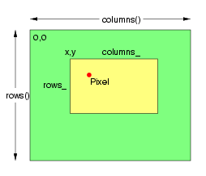

The Pixels class provides efficient access to raw image pixels. Image pixels (of type PixelPacket) may be accessed directly via the Image Pixel Cache. The image pixel cache is a rectangular window (a view) into the actual image pixels (which may be in memory, memory-mapped from a disk file, or entirely on disk). Obtain existing image pixels via get(). Create a new pixel region using set().
Depending on the capabilities of the operating system, and the relationship of the window to the image, the pixel cache may be a copy of the pixels in the selected window, or it may be the actual image pixels. In any case calling sync() insures that the base image is updated with the contents of the modified pixel cache. The method decode()supports copying foreign pixel data formats into the pixel cache according to the QuantumTypes. The method encode() supports copying the pixels in the cache to a foreign pixel representation according to the format specified by QuantumTypes.
Setting a view using the Pixels class does not cause the number of references to the underlying image to be reduced to one. Therefore, in order to ensure that only the current generation of the image is modified, the Image's modifyImage() method should be invoked to reduce the reference count on the underlying image to one. If this is not done, then it is possible for a previous generation of the image to be modified due to the use of reference counting when copying or constructing an Image.
The PixelPacket* returned by the set and get methods, and the IndexPacket* returned by the indexes method point to pixel data managed by the Pixels class. The Pixels class is responsible for releasing resources associated with the pixel view. This means that the pointer should never be passed to delete() or free().
The pixel view is a small image in which
the pixels may be accessed, addressed, and updated, as shown in the
following example, which produces an image similar to the one on the
right (minus lines and text):
|
// Create base image
// Set the image type to TrueColor DirectClass
representation. // Ensure that there is only one reference to
underlying image // Allocate pixel
view // Set all pixels
in region anchored at 38x36, with size 160x230 to green. // Save changes to
image. // Set all pixels
in region anchored at 86x72, with size 108x67 to yellow. // Set pixel at
position 108,94 to red // Save changes to
image. |
 |
Pixels supports the following
methods:
Pixel Cache Methods
|
Method |
Returns |
Signature |
Description |
|
const ssize_t x_, const ssize_t y_, const unsigned const int columns_, const size_t rows_ |
Transfers read-write pixels from the image to the pixel cache as defined by the specified rectangular region. Modified pixels may be subsequently transferred back to the image via sync. The value returned is intended for pixel access only. It should never be deallocated. |
||
|
const PixelPacket* |
const ssize_t x_, const ssize_t y_, const size_t columns_, const size_t rows_ |
Transfers read-only pixels from the image to the pixel cache as defined by the specified rectangular region. |
|
|
const ssize_t x_, const ssize_t y_, const size_t columns_, const size_t rows_ |
Allocates a pixel cache region to store image pixels as defined by the region rectangle. This area is subsequently transferred from the pixel cache to the image via sync. The value returned is intended for pixel access only. It should never be deallocated. |
||
|
void |
void |
Transfers the image cache pixels to the image. |
|
|
IndexPacket* |
void |
Returns the PsuedoColor pixel indexes corresponding to the pixel region defined by the last get , getConst, or set call. Only valid for PseudoColor and CMYKA images. The pixel indexes (an array of type IndexPacket, which is typedef Quantum, which is itself typedef unsigned char, or unsigned short, depending on the value of the QuantumDepth define) provide the colormap index (see colorMap) for each pixel in the image. For CMYKA images, the indexes represent the black channel. The value returned is intended for pixel access only. It should never be deallocated. |
|
|
int |
void |
Left ordinate of view |
|
|
int |
void |
Top ordinate of view |
|
|
size_t |
void |
Width of view |
|
|
size_t |
void |
Height of view |